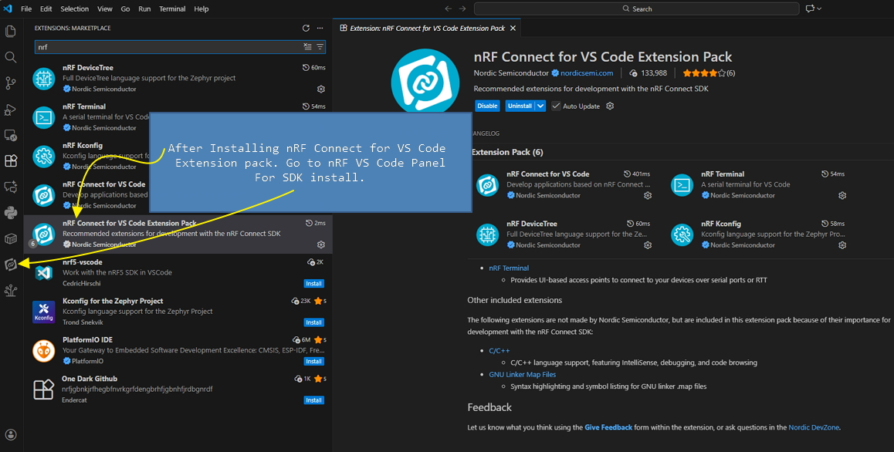

1. Issue 1 :: Only peripheral_accel project can pair with phone Bluetooth from phones settings panel.
2. Issue 2 :: "~/zephyrproject/zephyr/subsys/bluetooth/services/hrs.c" this file and some other files
are containing BLE service definitions. These defs are used in ..../samples/bluetooth/peripheral_accel project code by including
the header files as <zephyr/bluetooth/services/hrs.h> and similar header files for associated C files where the BLE services
are defined.
BLE Service Defs~/zephyrproject/zephyr/subsys/bluetooth/services/hrs.c
/* Heart Rate Service Declaration */
BT_GATT_SERVICE_DEFINE(hrs_svc,
BT_GATT_PRIMARY_SERVICE(BT_UUID_HRS),
BT_GATT_CHARACTERISTIC(BT_UUID_HRS_MEASUREMENT, BT_GATT_CHRC_NOTIFY,
BT_GATT_PERM_NONE, NULL, NULL, NULL),
BT_GATT_CCC(hrmc_ccc_cfg_changed,
HRS_GATT_PERM_DEFAULT),
BT_GATT_CHARACTERISTIC(BT_UUID_HRS_BODY_SENSOR, BT_GATT_CHRC_READ,
HRS_GATT_PERM_DEFAULT & GATT_PERM_READ_MASK,
read_blsc, NULL, NULL),
BT_GATT_CHARACTERISTIC(BT_UUID_HRS_CONTROL_POINT, BT_GATT_CHRC_WRITE,
HRS_GATT_PERM_DEFAULT & GATT_PERM_WRITE_MASK,
NULL, NULL, NULL),
);
When
peripheral_accel included the header, The project has those services includes usually. This project has
pairing functionality as well, but my custome project samples/basic/fwtic_v2 does not have pairing functionality.
peripheral_accel project has an extra
prj_minimal.conf file. I will check if copying this file into my project
has any effect.